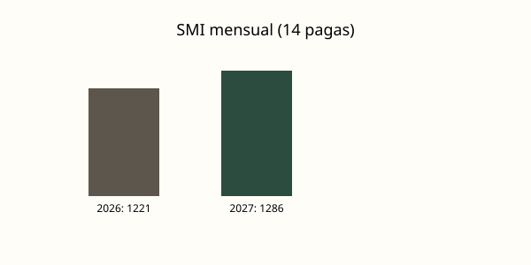

España · economía laboral · 17 de noviembre de 2026
El Consejo de Ministros aprueba la subida del SMI a 1.286 euros y el 4,5 % a los funcionarios para 2027.
_17.jpg)
Lo que coinciden los medios
El Consejo de Ministros del 17 de noviembre de 2026 aprobó un incremento del 5,3 % del salario mínimo interprofesional (SMI) aplicable a partir de 2027. El nuevo importe queda fijado en 1.286 euros brutos mensuales en 14 pagas, frente a los 1.221 euros vigentes en 2026. El Gobierno también aprobó una subida del 4,5 % para los salarios de los empleados públicos en 2027. La vicepresidenta segunda y ministra de Trabajo, Yolanda Díaz, confirmó las cifras en la rueda de prensa posterior al Consejo. La medida llega a 12 días de las elecciones generales del 29 de noviembre. El Ejecutivo ha indicado que el nuevo SMI seguirá exento de retención en el IRPF.
Las cifras han sido reproducidas de forma consistente por El País, RTVE, Cadena SER y otras redacciones. Aún no se ha publicado el real decreto en el Boletín Oficial del Estado; las declaraciones ministeriales y las notas de prensa constituyen la fuente primaria disponible el mismo día. El número de trabajadores afectados se sitúa en torno a 2,5 millones según estimaciones del Ministerio de Trabajo.
Lo que es solo declaración
Las afirmaciones de que la subida “recupera poder adquisitivo”, “reduce la desigualdad” o constituye “la mejor herramienta” son valoraciones políticas de la ministra y del Gobierno. Los sindicatos CCOO y UGT han celebrado el aumento pero han señalado que pedían un 7 % y que no se ha modificado el sistema de absorción y compensación de pluses. Las organizaciones empresariales han cuestionado el momento de la aprobación, en plena campaña electoral. Ninguna de estas valoraciones altera el hecho contable del porcentaje aprobado.
Mecanismo e historia que el lector necesita
El SMI es el salario mínimo legal que debe percibir un trabajador por cuenta ajena en España, fijado anualmente por el Gobierno tras consulta a los agentes sociales. Desde 2018 el importe ha pasado de 736 a 1.221 euros (2026), un incremento acumulado del orden del 66 % antes de la subida de hoy; con el 5,3 % adicional el acumulado desde 2018 supera el 74 %. En el mismo periodo el IPC ha subido aproximadamente un 28 %, según las series del INE citadas por los medios. La diferencia entre ambos porcentajes es la base de la afirmación gubernamental de ganancia de poder adquisitivo; el cálculo exacto depende de la cesta de inflación utilizada y del periodo de referencia.
La aprobación se produce en el marco de la campaña para las elecciones generales del 29 de noviembre de 2026. Las encuestas publicadas en las semanas anteriores sitúan a la suma de PP y Vox por encima de la mayoría absoluta, aunque los resultados definitivos solo se conocerán tras el recuento. La subida del SMI y de los salarios públicos forma parte del paquete de medidas laborales que el Gobierno ha anunciado en las últimas semanas. El texto legal definitivo, una vez publicado en el BOE, será el que vincule a empresas y administraciones a partir del 1 de enero de 2027.
La fotografía utilizada es una vista exterior del Palacio de las Cortes, sede del Congreso de los Diputados, tomada en un año anterior. No muestra la sala del Consejo de Ministros, ninguna comparecencia de Yolanda Díaz ni a trabajadores afectados por el SMI.
Lo que esta noticia no es
No es una evaluación económica completa del impacto sobre el empleo o la inflación. No es una predicción del resultado electoral del 29 de noviembre. No es el texto jurídico definitivo, que aún no ha sido publicado. La imagen es una fotografía de localización del edificio del Congreso, no de la decisión ministerial.

Artículos fuente y puntuaciones
Hero: fotografía de tipo de Wikimedia Commons del exterior del Congreso vía Special:FilePath. Gráfico es SVG local original. Ningún CDN de agencia de noticias como única fuente. Sin atributo crossorigin.